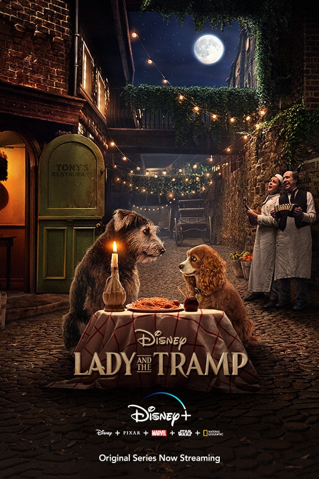

A rich, sheltered girl falls for a guy from the wrong side of the tracks. He steals her heart but also introduces her to a far more dangerous world. Not only does she spend a night in jail—where she learns about the horrors of the death penalty—she’s also devastated to find out she’s pregnant. When he returns to make amends, he winds up falsely accused of a crime and carted off to jail where he’ll almost certainly be executed. Only a harrowing, life-threatening rescue operation can save his life and bring the two lovers back together.
That description overlaps with any number of dramas about love and class divisions. It’s also the plot of Lady And The Tramp.From the way it’s described above, you’d be forgiven for not recognizing the 1955 Disney animated classic best known for a scene where two dogs share a romantic plate of spaghetti and meatballs. While Lady And The Tramp may be one of the most grown-up entries in the Disney canon, it masks its complex themes behind lush animation and subtle storytelling. For example, the idea that Lady is pregnant with Tramp’s puppies is conveyed solely in subtext, when her two respectable friends offer to marry her. What goes unspoken is the idea that they’re providing an escape from the stigma of being an unmarried mother.
I’ve loved Lady And The Tramp since virtually the moment I was born, as it was my mom’s favorite Disney movie. The long stretches of wordless montages and lovingly detailed depiction of a dog’s world are particularly accessible to young kids. And there’s a slow-paced, low-stakes feel to the film that provides an enjoyable break from the frenetic energy of most children’s entertainment. As I grew older, I began to understand more and more of the film. My favorite scene used to be one where Lady struggled to climb stairs as a puppy. Now it’s one where a pregnant wife calmly sends her husband out into the middle of a blizzard for watermelon and chop suey.
Lady And The Tramp is the rare Disney film more interested in reality than fantasy. Sure, it involves an imagined world of talking dogs, but they reflect and refract the film’s 1909 Midwestern setting. Many of the creators who worked on the project—including Walt Disney himself—grew up around that time period, and the film is brimming with nostalgia for a simpler era (which, ironically, is now much the same way we feel about the 1950s).
Illustration for article titled iLady And The Tramp /iis Walt Disney’s most grown-up film
But while it may be full of lovingly drawn worlds and bright musical numbers, underneath its charming exterior of literal puppy love, Lady And The Tramp explores its setting in a manner more akin to Howard’s End than Snow White & The Seven Dwarves.
Cocker spaniel Lady, Scottish terrier Jock, and bloodhound Trusty are the film’s upper class—the pets of rich owners—whose prim and proper world dictates a lid on every trash can, a fence around every tree, and a collar for every dog. Charming mutt Tramp, on the other hand, is a lower-class homeless ruffian whose world is marked by inequality, the ever-pervasive threat of the dogcatcher, and total independence.
But unlike a film like Titanic, which argues that the freedom of the lower class is better than the rigidity of the upper one, Lady And The Tramp finds great empathy for the dogs on both sides of the tracks. Outside of a genuinely horrific rat who pops up to threaten a baby in the final act, there’s no real villain in the film. Jock and Trusty are endearing for their loyalty, but the lower-class dogs are equally endearing for their frankness and sense of humor. When Lady is briefly thrown into the pound, her cellmates may be quick to tease, but they also assure her that her license and collar are a passport out. Plus, they put on a musical number to cheer her up, as all good friends should (sung by the movie’s co-songwriter Peggy Lee, in an early instance of a celebrity vocal in an animated film).
The film is also bold in its acknowledgment of the privileges associated with money and status. The otherwise cruel dogcatcher changes his demeanor as he carries Lady out of the pound. “You’re too nice of a girl to be in this place,” he coos as he returns her to her owners. The poorer dogs, meanwhile, stay locked up, living in constant fear of taking “the long walk” through a door no dog returns from. It’s a subtle commentary on the way class and the law intersect, and one that feels as timely today as it did 60 years ago. That the film shows a dog walking to his death solely in shadow softens but doesn’t nullify its point. Meanwhile the mournful song of the imprisoned dogs remains one of the most heartbreaking moments in the Disney canon.